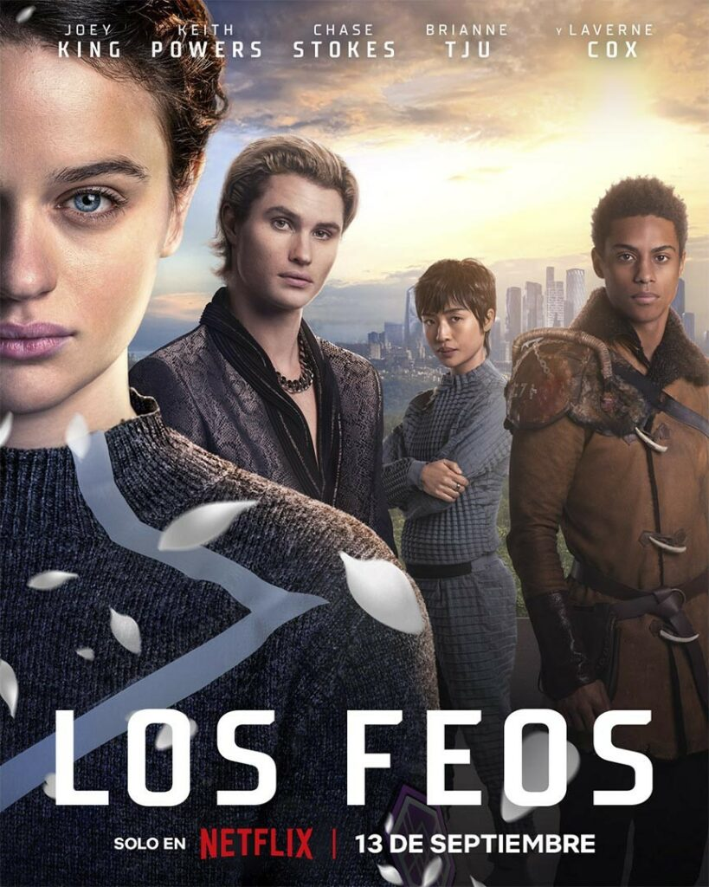
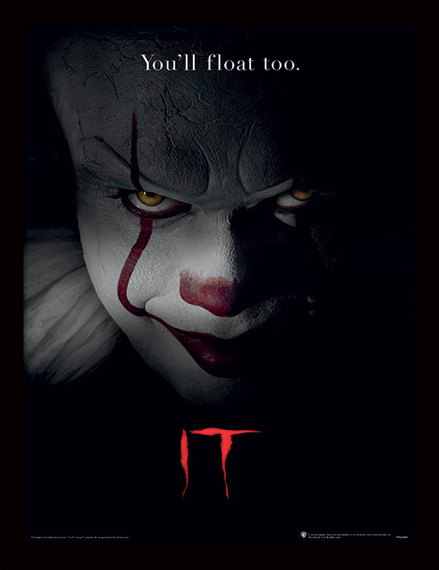

| Los Feos |
 |
En una distopía futurista con cánones de belleza impuestos, una adolescente a la espera de una operación de cirugía estética obligatoria se embarca en un viaje para encontrar a su amiga desaparecida. |
Nacho G. Velilla |
Joey King, Chase Stokes, Keith Powers, Keith Powers, Brianne Tju, Jan Luis Castellanos, Kevin Miles, Luke Eisner |
| IT |
 |
Varios niños de una pequeña ciudad del estado de Maine se alían para combatir a una entidad diabólica que adopta la forma de un payaso |
Andrés Muschietti |
Bill Skarsgård, Jaeden Martell, Finn Wolfhard, Jack Dylan Grazer, Jeremy Ray Taylor, Wyatt Oleff, Jackson Robert Scott, Jocelyn Mattka |
| Multiple |
 |
A pesar de que Kevin le ha demostrado a su psiquiatra de confianza que posee 23 personalidades diferentes, aún queda una misteriosa por emerger decidida a dominar a todas las demás. |
M. Night Shyamalan |
James McAvoy, M. Night Shyamalan, Anya Taylor-Joy, Jessica Sula, Haley Lu Richardson, Bruce Willis, Betty Buckley, Izzie Coffey |
| A través de mi ventana |
 |
Hace mucho tiempo que Raquel está enamorada de su vecino, Ares, y lo observa en secreto sin atreverse a hablarle. ¿Conseguirá que se enamore de ella? |
Marçal Forés |
Clara Galle, Julio Peña Fernández, Natalia Azahara, Hugo Arbués, Guillermo Lasheras, Eric Masip, Andrea Chaparro, Emilia Lazo |
| Stranger Things |
 |
A raíz de la desaparición de un niño, un pueblo desvela un misterio relacionado con experimentos secretos, fuerzas sobrenaturales aterradoras y una niña muy extraña. |
Shawn Levy |
Millie Bobby Brown, Finn Wolfhard, Noah Schnapp, Caleb McLaughlin, Sadie Sink, Gaten Matarazzo, Joe Keery, David Harbour |